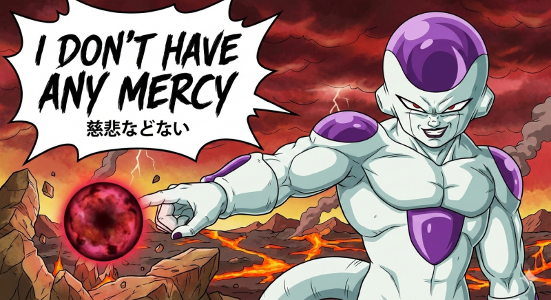

挑戦する難易度を選んでください
設定した連続正解数を達成すると即時で合格！合格バッジを獲得できます。
合格目標：連続正解数を設定
ミスせずに目標数連続で正解すると合格となります
標準
問1, 2, 3, 5, 6, 7 ＆ 変化の割合の増減計算
- ✔ 式からの傾き・切片の即答
- ✔ $ax + by = c$ の基本変形
- ✔ $x$の増加・$y$の減少から変化の割合
発展
問8〜10, 14〜17 ＆ 分数式・平行移動・グラフの性質
- ✔ $y$ 軸の正・負への平行移動の式・空欄補充
- ✔ $y = -\frac{3x-5}{4}$ の傾き・切片・増加量
- ✔ 2点を通る直線の式・増加量の逆算
超発展
問11, 12, 13, 18 ＆ 反比例の変化の割合
- ✔ 増加量から傾き $a$ の逆算
- ✔ 変域からの定数 $a, b$ の特定
- ✔ $y = -\frac{a}{x}$ の変化の割合の計算
💡 一次関数の最重要公式まとめ（解く前の確認） ▼
① 基本の式
$y = ax + b$ （$a$：傾き・変化の割合, $b$：切片）
② 変化の割合の公式
$\text{変化の割合} = \dfrac{y\text{の増加量}}{x\text{の増加量}} = a$ （常に一定）
③ 増加量の計算
$y\text{の増加量} = a \times (x\text{の増加量})$
④ 増加量の定義
増加量 = $(\text{変化後の値}) - (\text{変化前の値})$
宇宙の帝王降臨！【フリーザ編】解放！！
全6種類の勲章を獲得した貴様なら、私の一次関数にも耐えられるはずですね…？
私の戦闘力は53万です
「ぜったいに許さんぞ虫ケラども…！じわじわとなぶり殺しにしてくれる！！
目標の5問連続正解、果たして耐えられますかな？」
「ホッホッホ…さあ、私の一次関数に答えられますか？」
演習終了！お疲れ様でした
今回の難易度での理解度をチェックしましょう
正解数
素晴らしい理解度です！
合格おめでとうございます！
難易度【標準】で、目標の10問連続正解を達成しました！
ACQUIRED DIGITAL EMBLEM
画面上部の合格勲章バーに正式登録されました！
神龍（シェンロン）出現！一次関数完全制覇！
宇宙の帝王フリーザを撃破し、ついに7つのドラゴンボールが集まった！
「さあ、願いを言え……
どんな願いも、ひとつだけ かなえてやろう……！」
※「アプリを閉じる」で閉じない場合は、ブラウザのタブを閉じて終了してください。
全6種の合格勲章 完全制覇！
標準・発展・超発展、すべての試練を突破しました！
異次元から巨大な気配が接近中…… (3秒後)

「ホッホッホ…私の一次関数に耐えられるかな？」
極限の隠し難易度【フリーザ編】が解放されました！